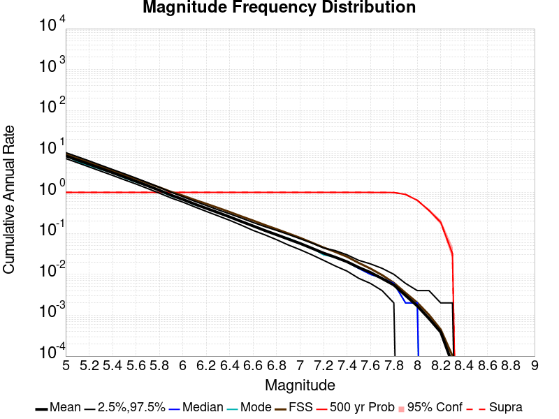
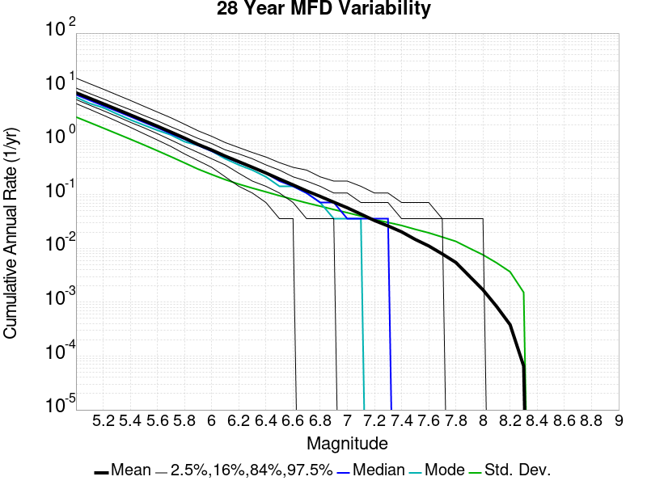
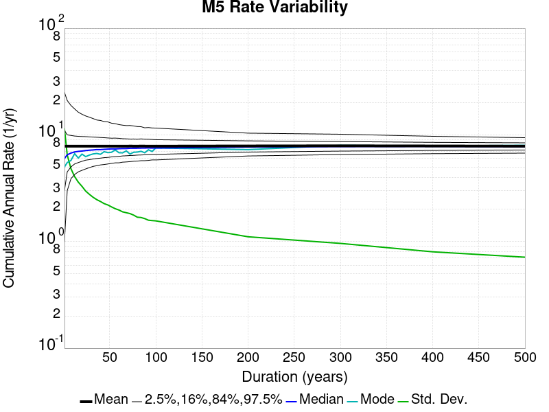
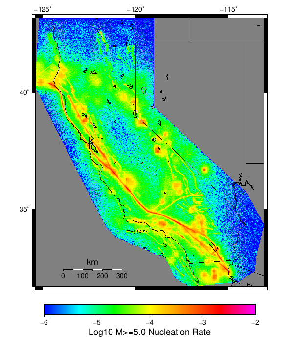

Start 2012, 500 yr, Spontaneous, Historical Catalog, AleatoryKTest Results
| Start 2012, 500 yr, Spontaneous, Historical Catalog, AleatoryKTest |
|---|
| Num Simulations | 180 (incomplete) |
| Start Time | 2012/01/01 00:00:00 UTC |
| Start Time Epoch Milliseconds | 1325376000000 |
| Duration | 500 Years |
| Includes Spontaneous? | true |
| Trigger Ruptures | (none) |
| Historical Ruptures | 60366 Trigger Ruptures |
| First: M7.3 at 1852/01/05 04:40:39 UTC |
| Last: M3.2 at 2011/12/31 19:14:44 UTC |
| Largest: M7.9 at 1857/01/09 16:25:39 UTC |
| Config Generated With | u3etas_config_builder.sh --start-year 2012 --num-simulations 1000 --duration-years 500 --include-spontaneous --historical-catalog --name-add AleatoryKTest --hpc-site USC_HPC --nodes 18 --hours 24 --queue scec |
Table Of Contents
Magnitude Frequency Distribution
(top)
Legend
- Mean (thick black line): mean annual rate across all 180 catalogs
- 2.5%,97.5% (thin black lines): annual rate percentiles across all 180 catalogs
- Median (thin blue line): median annual rate across all 180 catalogs
- Mode (thin cyan line): modal annual rate across all 180 catalogs (scaled to annualized value)
- 500 yr Probability (thin red line): 500 year probability calculated as the fraction of catalogs with at least 1 occurrence
- 500 yr Supraseismogenic Probability (thin dashed red line): same as above, but only for supraseismogenic ruptures on explicitly modeled UCERF3 faults
- 95% Conf (light red shaded region): binomial 95% confidence bounds on probability

| Mag | Mean | 2.5 %ile | 97.5 %ile | Median | Mode | 500 yr Probability | 500 yr Supra-Seis Prob |
|---|
| M≥5 | 7.880 | 6.802 | 9.268 | 7.752 | 7.778 | 1.000 (100.00%) | 1.000 (100.00%) |
| M≥5.1 | 6.231 | 5.392 | 7.404 | 6.128 | 6.034 | 1.000 (100.00%) | 1.000 (100.00%) |
| M≥5.2 | 4.925 | 4.234 | 5.910 | 4.860 | 4.792 | 1.000 (100.00%) | 1.000 (100.00%) |
| M≥5.3 | 3.885 | 3.320 | 4.666 | 3.828 | 3.734 | 1.000 (100.00%) | 1.000 (100.00%) |
| M≥5.4 | 3.057 | 2.624 | 3.674 | 3.012 | 2.952 | 1.000 (100.00%) | 1.000 (100.00%) |
| M≥5.5 | 2.402 | 2.068 | 2.884 | 2.374 | 2.242 | 1.000 (100.00%) | 1.000 (100.00%) |
| M≥5.6 | 1.883 | 1.608 | 2.258 | 1.858 | 1.796 | 1.000 (100.00%) | 1.000 (100.00%) |
| M≥5.7 | 1.467 | 1.238 | 1.746 | 1.458 | 1.438 | 1.000 (100.00%) | 1.000 (100.00%) |
| M≥5.8 | 1.136 | 0.960 | 1.344 | 1.130 | 1.082 | 1.000 (100.00%) | 1.000 (100.00%) |
| M≥5.9 | 0.864 | 0.730 | 1.018 | 0.864 | 0.898 | 1.000 (100.00%) | 1.000 (100.00%) |
| M≥6 | 0.680 | 0.576 | 0.790 | 0.678 | 0.654 | 1.000 (100.00%) | 1.000 (100.00%) |
| M≥6.1 | 0.524 | 0.442 | 0.614 | 0.522 | 0.500 | 1.000 (100.00%) | 1.000 (100.00%) |
| M≥6.2 | 0.413 | 0.344 | 0.486 | 0.410 | 0.406 | 1.000 (100.00%) | 1.000 (100.00%) |
| M≥6.3 | 0.324 | 0.268 | 0.380 | 0.322 | 0.318 | 1.000 (100.00%) | 1.000 (100.00%) |
| M≥6.4 | 0.254 | 0.202 | 0.300 | 0.252 | 0.248 | 1.000 (100.00%) | 1.000 (100.00%) |
| M≥6.5 | 0.196 | 0.162 | 0.236 | 0.194 | 0.194 | 1.000 (100.00%) | 1.000 (100.00%) |
| M≥6.6 | 0.153 | 0.124 | 0.186 | 0.152 | 0.150 | 1.000 (100.00%) | 1.000 (100.00%) |
| M≥6.7 | 0.119 | 0.094 | 0.152 | 0.118 | 0.118 | 1.000 (100.00%) | 1.000 (100.00%) |
| M≥6.8 | 0.094 | 0.072 | 0.122 | 0.094 | 0.086 | 1.000 (100.00%) | 1.000 (100.00%) |
| M≥6.9 | 0.073 | 0.054 | 0.094 | 0.072 | 0.076 | 1.000 (100.00%) | 1.000 (100.00%) |
| M≥7 | 0.057 | 0.044 | 0.072 | 0.058 | 0.058 | 1.000 (100.00%) | 1.000 (100.00%) |
| M≥7.1 | 0.043 | 0.032 | 0.058 | 0.044 | 0.040 | 1.000 (100.00%) | 1.000 (100.00%) |
| M≥7.2 | 0.033 | 0.022 | 0.044 | 0.032 | 0.030 | 1.000 (100.00%) | 1.000 (100.00%) |
| M≥7.3 | 0.026 | 0.014 | 0.036 | 0.026 | 0.026 | 1.000 (100.00%) | 1.000 (100.00%) |
| M≥7.4 | 0.020 | 0.010 | 0.030 | 0.020 | 0.022 | 1.000 (100.00%) | 1.000 (100.00%) |
| M≥7.5 | 0.015 | 8.00E-3 | 0.022 | 0.014 | 0.014 | 1.000 (100.00%) | 1.000 (100.00%) |
| M≥7.6 | 0.011 | 6.00E-3 | 0.018 | 0.010 | 0.010 | 1.000 (100.00%) | 1.000 (100.00%) |
| M≥7.7 | 7.73E-3 | 4.00E-3 | 0.012 | 8.00E-3 | 6.00E-3 | 1.000 (100.00%) | 1.000 (100.00%) |
| M≥7.8 | 5.33E-3 | 2.00E-3 | 0.010 | 6.00E-3 | 4.00E-3 | 0.989 (98.89%) | 0.989 (98.89%) |
| M≥7.9 | 3.12E-3 | 0.000 | 6.00E-3 | 2.00E-3 | 2.00E-3 | 0.906 (90.56%) | 0.906 (90.56%) |
| M≥8 | 1.83E-3 | 0.000 | 4.00E-3 | 2.00E-3 | 2.00E-3 | 0.717 (71.67%) | 0.717 (71.67%) |
| M≥8.1 | 9.22E-4 | 0.000 | 4.00E-3 | 0.000 | 0.000 | 0.411 (41.11%) | 0.411 (41.11%) |
| M≥8.2 | 3.67E-4 | 0.000 | 2.00E-3 | 0.000 | 0.000 | 0.178 (17.78%) | 0.178 (17.78%) |
| M≥8.3 | 1.00E-4 | 0.000 | 2.00E-3 | 0.000 | 0.000 | 0.050 (5.00%) | 0.050 (5.00%) |
| M≥8.4 | 0.000 | 0.000 | 0.000 | 0.000 | 0.000 | 0.000 (0.00%) | 0.000 (0.00%) |
| M≥8.5 | 0.000 | 0.000 | 0.000 | 0.000 | 0.000 | 0.000 (0.00%) | 0.000 (0.00%) |
| M≥8.6 | 0.000 | 0.000 | 0.000 | 0.000 | 0.000 | 0.000 (0.00%) | 0.000 (0.00%) |
| M≥8.7 | 0.000 | 0.000 | 0.000 | 0.000 | 0.000 | 0.000 (0.00%) | 0.000 (0.00%) |
| M≥8.8 | 0.000 | 0.000 | 0.000 | 0.000 | 0.000 | 0.000 (0.00%) | 0.000 (0.00%) |
| M≥8.9 | 0.000 | 0.000 | 0.000 | 0.000 | 0.000 | 0.000 (0.00%) | 0.000 (0.00%) |
| M≥9 | 0.000 | 0.000 | 0.000 | 0.000 | 0.000 | 0.000 (0.00%) | 0.000 (0.00%) |
Long Term Rate Variability
(top)
162 Year Variability
(top)

Download CSV Here
| Magnitude | Mean | Median | Mode | Std. Dev. | 2.5 %-ile | 16 %-ile | 84 %-ile | 97.5 %-ile |
|---|
| 5.0 | 7.8789554 | 7.654321 | 7.6296296 | 1.1808233 | 6.2530866 | 6.7901235 | 8.87037 | 10.759259 |
| 5.1 | 6.230167 | 6.080247 | 5.796296 | 0.93898714 | 4.8641977 | 5.388889 | 7.0246916 | 8.444445 |
| 5.2 | 4.92516 | 4.8209877 | 4.839506 | 0.73817915 | 3.8024693 | 4.2469134 | 5.567901 | 6.648148 |
| 5.3 | 3.884545 | 3.7839506 | 3.6604939 | 0.5786796 | 3.0123458 | 3.3765433 | 4.382716 | 5.203704 |
| 5.4 | 3.0558755 | 2.9814816 | 2.9814816 | 0.45411673 | 2.345679 | 2.6604939 | 3.4506173 | 4.0740743 |
| 5.5 | 2.401566 | 2.351852 | 2.2530863 | 0.35609207 | 1.8518518 | 2.0617285 | 2.7222223 | 3.1728394 |
| 5.6 | 1.8825788 | 1.8395061 | 1.7530864 | 0.27705747 | 1.4382716 | 1.6172839 | 2.1234567 | 2.4567902 |
| 5.7 | 1.4667925 | 1.4382716 | 1.3703704 | 0.21376154 | 1.1296296 | 1.2592592 | 1.6666666 | 1.9074074 |
| 5.8 | 1.1359168 | 1.1172839 | 1.0432099 | 0.16588838 | 0.845679 | 0.97530866 | 1.2901235 | 1.5061729 |
| 5.9 | 0.8634545 | 0.8518519 | 0.8148148 | 0.12478816 | 0.6481481 | 0.74691355 | 0.9814815 | 1.1358025 |
| 6.0 | 0.68004113 | 0.6728395 | 0.6419753 | 0.096464254 | 0.50617284 | 0.58641976 | 0.7777778 | 0.88271606 |
| 6.1 | 0.5239026 | 0.5185185 | 0.5308642 | 0.07736062 | 0.38271606 | 0.45061728 | 0.60493827 | 0.6851852 |
| 6.2 | 0.41256288 | 0.41358024 | 0.41358024 | 0.0643933 | 0.29012346 | 0.34567901 | 0.47530866 | 0.5493827 |
| 6.3 | 0.3238683 | 0.32098764 | 0.34567901 | 0.053492334 | 0.22839506 | 0.2654321 | 0.37654322 | 0.4382716 |
| 6.4 | 0.2540695 | 0.25308642 | 0.25925925 | 0.04488331 | 0.17283951 | 0.20987654 | 0.2962963 | 0.34567901 |
| 6.5 | 0.19594193 | 0.19753087 | 0.20987654 | 0.038965445 | 0.12962963 | 0.15432099 | 0.2345679 | 0.2777778 |
| 6.6 | 0.15286922 | 0.15432099 | 0.13580246 | 0.03300071 | 0.09259259 | 0.11728395 | 0.18518518 | 0.22222222 |
| 6.7 | 0.118987195 | 0.11728395 | 0.09876543 | 0.02793909 | 0.06790123 | 0.09259259 | 0.14814815 | 0.17283951 |
| 6.8 | 0.09396434 | 0.09259259 | 0.086419754 | 0.024066942 | 0.049382716 | 0.06790123 | 0.11728395 | 0.14814815 |
| 6.9 | 0.07313672 | 0.074074075 | 0.06790123 | 0.019609747 | 0.037037037 | 0.055555556 | 0.09259259 | 0.11111111 |
| 7.0 | 0.05723594 | 0.055555556 | 0.049382716 | 0.016947793 | 0.024691358 | 0.043209877 | 0.074074075 | 0.09259259 |
| 7.1 | 0.04344993 | 0.043209877 | 0.037037037 | 0.014794624 | 0.018518519 | 0.030864198 | 0.055555556 | 0.074074075 |
| 7.2 | 0.033127572 | 0.030864198 | 0.037037037 | 0.01221153 | 0.012345679 | 0.018518519 | 0.043209877 | 0.061728396 |
| 7.3 | 0.026143119 | 0.024691358 | 0.018518519 | 0.010817001 | 0.0061728396 | 0.018518519 | 0.037037037 | 0.049382716 |
| 7.4 | 0.02037037 | 0.018518519 | 0.018518519 | 0.009562182 | 0.0061728396 | 0.012345679 | 0.030864198 | 0.043209877 |
| 7.5 | 0.014700503 | 0.012345679 | 0.012345679 | 0.008000449 | 0.0 | 0.0061728396 | 0.024691358 | 0.030864198 |
| 7.6 | 0.011019662 | 0.012345679 | 0.012345679 | 0.006742541 | 0.0 | 0.0061728396 | 0.018518519 | 0.024691358 |
| 7.7 | 0.0077160494 | 0.0061728396 | 0.0061728396 | 0.0054311124 | 0.0 | 0.0 | 0.012345679 | 0.018518519 |
| 7.8 | 0.005315501 | 0.0061728396 | 0.0061728396 | 0.004594343 | 0.0 | 0.0 | 0.012345679 | 0.012345679 |
| 7.9 | 0.003109282 | 0.0 | 0.0 | 0.0035172272 | 0.0 | 0.0 | 0.0061728396 | 0.012345679 |
| 8.0 | 0.0018404206 | 0.0 | 0.0 | 0.002948763 | 0.0 | 0.0 | 0.0061728396 | 0.0061728396 |
| 8.1 | 9.1449474E-4 | 0.0 | 0.0 | 0.002258412 | 0.0 | 0.0 | 0.0 | 0.0061728396 |
| 8.2 | 3.5436673E-4 | 0.0 | 0.0 | 0.0014372538 | 0.0 | 0.0 | 0.0 | 0.0061728396 |
| 8.3 | 9.1449474E-5 | 0.0 | 0.0 | 7.464394E-4 | 0.0 | 0.0 | 0.0 | 0.0 |
| 8.4 | 0.0 | 0.0 | 0.0 | 0.0 | 0.0 | 0.0 | 0.0 | 0.0 |
| 8.5 | 0.0 | 0.0 | 0.0 | 0.0 | 0.0 | 0.0 | 0.0 | 0.0 |
| 8.6 | 0.0 | 0.0 | 0.0 | 0.0 | 0.0 | 0.0 | 0.0 | 0.0 |
| 8.7 | 0.0 | 0.0 | 0.0 | 0.0 | 0.0 | 0.0 | 0.0 | 0.0 |
| 8.8 | 0.0 | 0.0 | 0.0 | 0.0 | 0.0 | 0.0 | 0.0 | 0.0 |
| 8.9 | 0.0 | 0.0 | 0.0 | 0.0 | 0.0 | 0.0 | 0.0 | 0.0 |
| 9.0 | 0.0 | 0.0 | 0.0 | 0.0 | 0.0 | 0.0 | 0.0 | 0.0 |
80 Year Variability
(top)

Download CSV Here
| Magnitude | Mean | Median | Mode | Std. Dev. | 2.5 %-ile | 16 %-ile | 84 %-ile | 97.5 %-ile |
|---|
| 5.0 | 7.882882 | 7.4875 | 6.4 | 1.6613759 | 5.8625 | 6.475 | 9.1125 | 12.075 |
| 5.1 | 6.232604 | 5.925 | 5.0375 | 1.3170141 | 4.5875 | 5.125 | 7.2375 | 9.55 |
| 5.2 | 4.926366 | 4.7 | 4.3125 | 1.0337421 | 3.65 | 4.05 | 5.7375 | 7.5625 |
| 5.3 | 3.885081 | 3.725 | 3.525 | 0.81066644 | 2.85 | 3.1875 | 4.5375 | 5.9 |
| 5.4 | 3.056493 | 2.925 | 2.8375 | 0.63918805 | 2.2125 | 2.5125 | 3.5875 | 4.6625 |
| 5.5 | 2.4020603 | 2.3 | 2.15 | 0.49921867 | 1.7375 | 1.9625 | 2.8375 | 3.675 |
| 5.6 | 1.8828125 | 1.8125 | 1.7 | 0.3864395 | 1.3375 | 1.5375 | 2.2375 | 2.825 |
| 5.7 | 1.4669098 | 1.4125 | 1.3375 | 0.29778847 | 1.0375 | 1.1875 | 1.7375 | 2.175 |
| 5.8 | 1.1361227 | 1.1 | 1.1125 | 0.23109218 | 0.7875 | 0.925 | 1.35 | 1.7 |
| 5.9 | 0.86368054 | 0.8375 | 0.8125 | 0.17513168 | 0.5875 | 0.7 | 1.0375 | 1.275 |
| 6.0 | 0.68025464 | 0.6625 | 0.625 | 0.13777468 | 0.4625 | 0.55 | 0.8125 | 0.9875 |
| 6.1 | 0.52417827 | 0.5125 | 0.5375 | 0.1126025 | 0.3375 | 0.4125 | 0.6375 | 0.7625 |
| 6.2 | 0.4125926 | 0.4125 | 0.3875 | 0.09303379 | 0.2625 | 0.3125 | 0.5 | 0.6125 |
| 6.3 | 0.32394677 | 0.3125 | 0.275 | 0.07715596 | 0.2 | 0.25 | 0.4 | 0.4875 |
| 6.4 | 0.2540625 | 0.25 | 0.225 | 0.06558856 | 0.1375 | 0.1875 | 0.325 | 0.4 |
| 6.5 | 0.19578704 | 0.1875 | 0.1625 | 0.05595778 | 0.1 | 0.1375 | 0.25 | 0.3125 |
| 6.6 | 0.15270834 | 0.15 | 0.125 | 0.04801327 | 0.0625 | 0.1125 | 0.2 | 0.2625 |
| 6.7 | 0.11888889 | 0.1125 | 0.1 | 0.04058743 | 0.05 | 0.075 | 0.1625 | 0.2125 |
| 6.8 | 0.09386574 | 0.0875 | 0.0875 | 0.035129156 | 0.0375 | 0.0625 | 0.125 | 0.1625 |
| 6.9 | 0.07303241 | 0.075 | 0.0625 | 0.030043896 | 0.025 | 0.0375 | 0.1 | 0.1375 |
| 7.0 | 0.057199076 | 0.05 | 0.05 | 0.026723964 | 0.0125 | 0.025 | 0.0875 | 0.1125 |
| 7.1 | 0.04346065 | 0.0375 | 0.0375 | 0.022843193 | 0.0125 | 0.025 | 0.0625 | 0.1 |
| 7.2 | 0.03315972 | 0.025 | 0.025 | 0.019196648 | 0.0 | 0.0125 | 0.05 | 0.075 |
| 7.3 | 0.02619213 | 0.025 | 0.025 | 0.017065713 | 0.0 | 0.0125 | 0.0375 | 0.0625 |
| 7.4 | 0.020393519 | 0.0125 | 0.0125 | 0.014997923 | 0.0 | 0.0 | 0.0375 | 0.05 |
| 7.5 | 0.014756944 | 0.0125 | 0.0125 | 0.012631329 | 0.0 | 0.0 | 0.025 | 0.0375 |
| 7.6 | 0.011076389 | 0.0125 | 0.0125 | 0.010863652 | 0.0 | 0.0 | 0.025 | 0.0375 |
| 7.7 | 0.007777778 | 0.0125 | 0.0 | 0.008841838 | 0.0 | 0.0 | 0.0125 | 0.025 |
| 7.8 | 0.005358796 | 0.0 | 0.0 | 0.0074230507 | 0.0 | 0.0 | 0.0125 | 0.025 |
| 7.9 | 0.003136574 | 0.0 | 0.0 | 0.0056314524 | 0.0 | 0.0 | 0.0125 | 0.0125 |
| 8.0 | 0.0018518518 | 0.0 | 0.0 | 0.0045073614 | 0.0 | 0.0 | 0.0 | 0.0125 |
| 8.1 | 9.259259E-4 | 0.0 | 0.0 | 0.003275159 | 0.0 | 0.0 | 0.0 | 0.0125 |
| 8.2 | 3.587963E-4 | 0.0 | 0.0 | 0.0020881225 | 0.0 | 0.0 | 0.0 | 0.0125 |
| 8.3 | 9.259259E-5 | 0.0 | 0.0 | 0.0010723333 | 0.0 | 0.0 | 0.0 | 0.0 |
| 8.4 | 0.0 | 0.0 | 0.0 | 0.0 | 0.0 | 0.0 | 0.0 | 0.0 |
| 8.5 | 0.0 | 0.0 | 0.0 | 0.0 | 0.0 | 0.0 | 0.0 | 0.0 |
| 8.6 | 0.0 | 0.0 | 0.0 | 0.0 | 0.0 | 0.0 | 0.0 | 0.0 |
| 8.7 | 0.0 | 0.0 | 0.0 | 0.0 | 0.0 | 0.0 | 0.0 | 0.0 |
| 8.8 | 0.0 | 0.0 | 0.0 | 0.0 | 0.0 | 0.0 | 0.0 | 0.0 |
| 8.9 | 0.0 | 0.0 | 0.0 | 0.0 | 0.0 | 0.0 | 0.0 | 0.0 |
| 9.0 | 0.0 | 0.0 | 0.0 | 0.0 | 0.0 | 0.0 | 0.0 | 0.0 |
28 Year Variability
(top)

Download CSV Here
| Magnitude | Mean | Median | Mode | Std. Dev. | 2.5 %-ile | 16 %-ile | 84 %-ile | 97.5 %-ile |
|---|
| 5.0 | 7.884279 | 7.214286 | 5.892857 | 2.7072144 | 5.0 | 5.892857 | 9.642858 | 15.107142 |
| 5.1 | 6.2338233 | 5.714286 | 5.428571 | 2.1457949 | 3.857143 | 4.642857 | 7.678571 | 11.857142 |
| 5.2 | 4.9272294 | 4.535714 | 4.107143 | 1.6880667 | 3.0357144 | 3.6785715 | 6.071429 | 9.321428 |
| 5.3 | 3.8859828 | 3.607143 | 3.2142856 | 1.3255728 | 2.357143 | 2.857143 | 4.821429 | 7.321429 |
| 5.4 | 3.0571778 | 2.8214285 | 2.6785715 | 1.0465168 | 1.8214285 | 2.25 | 3.7857144 | 5.785714 |
| 5.5 | 2.4027777 | 2.25 | 2.0714285 | 0.82260156 | 1.3928572 | 1.75 | 3.0357144 | 4.464286 |
| 5.6 | 1.8833917 | 1.7857143 | 1.6785715 | 0.63925046 | 1.0357143 | 1.3571428 | 2.392857 | 3.4642856 |
| 5.7 | 1.4672385 | 1.3571428 | 1.3214285 | 0.49413726 | 0.78571427 | 1.0357143 | 1.8928572 | 2.7142856 |
| 5.8 | 1.1362861 | 1.0714285 | 1.0357143 | 0.38265345 | 0.5714286 | 0.78571427 | 1.4642857 | 2.0714285 |
| 5.9 | 0.86388886 | 0.8214286 | 0.8214286 | 0.2928683 | 0.42857143 | 0.60714287 | 1.1071428 | 1.5714285 |
| 6.0 | 0.6804388 | 0.64285713 | 0.64285713 | 0.23329037 | 0.32142857 | 0.4642857 | 0.89285713 | 1.2142857 |
| 6.1 | 0.52452147 | 0.5 | 0.5 | 0.1893134 | 0.21428572 | 0.35714287 | 0.71428573 | 0.96428573 |
| 6.2 | 0.41297853 | 0.39285713 | 0.39285713 | 0.15741123 | 0.14285715 | 0.25 | 0.5714286 | 0.75 |
| 6.3 | 0.324148 | 0.32142857 | 0.25 | 0.13140169 | 0.10714286 | 0.21428572 | 0.4642857 | 0.60714287 |
| 6.4 | 0.25422502 | 0.25 | 0.21428572 | 0.112496756 | 0.071428575 | 0.14285715 | 0.35714287 | 0.5 |
| 6.5 | 0.1960084 | 0.17857143 | 0.14285715 | 0.09705455 | 0.035714287 | 0.10714286 | 0.2857143 | 0.42857143 |
| 6.6 | 0.1528945 | 0.14285715 | 0.14285715 | 0.082219444 | 0.035714287 | 0.071428575 | 0.21428572 | 0.35714287 |
| 6.7 | 0.11894257 | 0.10714286 | 0.10714286 | 0.07060355 | 0.0 | 0.035714287 | 0.17857143 | 0.2857143 |
| 6.8 | 0.09388422 | 0.071428575 | 0.071428575 | 0.06145071 | 0.0 | 0.035714287 | 0.14285715 | 0.25 |
| 6.9 | 0.07305089 | 0.071428575 | 0.035714287 | 0.052834466 | 0.0 | 0.035714287 | 0.10714286 | 0.17857143 |
| 7.0 | 0.057201214 | 0.035714287 | 0.035714287 | 0.046220113 | 0.0 | 0.0 | 0.10714286 | 0.17857143 |
| 7.1 | 0.043499067 | 0.035714287 | 0.035714287 | 0.03980355 | 0.0 | 0.0 | 0.071428575 | 0.14285715 |
| 7.2 | 0.03319328 | 0.035714287 | 0.0 | 0.034222286 | 0.0 | 0.0 | 0.071428575 | 0.10714286 |
| 7.3 | 0.02621382 | 0.035714287 | 0.0 | 0.030201104 | 0.0 | 0.0 | 0.071428575 | 0.10714286 |
| 7.4 | 0.020436509 | 0.0 | 0.0 | 0.02663234 | 0.0 | 0.0 | 0.035714287 | 0.071428575 |
| 7.5 | 0.01477591 | 0.0 | 0.0 | 0.022538017 | 0.0 | 0.0 | 0.035714287 | 0.071428575 |
| 7.6 | 0.011087769 | 0.0 | 0.0 | 0.01953342 | 0.0 | 0.0 | 0.035714287 | 0.071428575 |
| 7.7 | 0.0077847806 | 0.0 | 0.0 | 0.016279763 | 0.0 | 0.0 | 0.035714287 | 0.035714287 |
| 7.8 | 0.005357143 | 0.0 | 0.0 | 0.013454641 | 0.0 | 0.0 | 0.0 | 0.035714287 |
| 7.9 | 0.0031395892 | 0.0 | 0.0 | 0.010155714 | 0.0 | 0.0 | 0.0 | 0.035714287 |
| 8.0 | 0.0018557423 | 0.0 | 0.0 | 0.007928005 | 0.0 | 0.0 | 0.0 | 0.035714287 |
| 8.1 | 9.220355E-4 | 0.0 | 0.0 | 0.0056648194 | 0.0 | 0.0 | 0.0 | 0.035714287 |
| 8.2 | 3.5014006E-4 | 0.0 | 0.0 | 0.0035194391 | 0.0 | 0.0 | 0.0 | 0.0 |
| 8.3 | 9.337068E-5 | 0.0 | 0.0 | 0.0018240166 | 0.0 | 0.0 | 0.0 | 0.0 |
| 8.4 | 0.0 | 0.0 | 0.0 | 0.0 | 0.0 | 0.0 | 0.0 | 0.0 |
| 8.5 | 0.0 | 0.0 | 0.0 | 0.0 | 0.0 | 0.0 | 0.0 | 0.0 |
| 8.6 | 0.0 | 0.0 | 0.0 | 0.0 | 0.0 | 0.0 | 0.0 | 0.0 |
| 8.7 | 0.0 | 0.0 | 0.0 | 0.0 | 0.0 | 0.0 | 0.0 | 0.0 |
| 8.8 | 0.0 | 0.0 | 0.0 | 0.0 | 0.0 | 0.0 | 0.0 | 0.0 |
| 8.9 | 0.0 | 0.0 | 0.0 | 0.0 | 0.0 | 0.0 | 0.0 | 0.0 |
| 9.0 | 0.0 | 0.0 | 0.0 | 0.0 | 0.0 | 0.0 | 0.0 | 0.0 |
Variability Duration Dependence
(top)

Download CSV Here
| Duration (years) | Mean | Median | Mode | Std. Dev. | 2.5 %-ile | 16 %-ile | 84 %-ile | 97.5 %-ile |
|---|
| 1.0 | 7.8797 | 6.0 | 4.0 | 10.916552 | 1.0 | 3.0 | 11.0 | 25.0 |
| 4.0 | 7.8797 | 6.5 | 6.0 | 6.322477 | 3.0 | 4.5 | 10.0 | 21.5 |
| 8.0 | 7.879682 | 6.75 | 5.875 | 4.727415 | 3.875 | 5.125 | 10.0 | 19.0 |
| 12.0 | 7.8756437 | 6.9166665 | 6.0 | 3.9064095 | 4.25 | 5.3333335 | 9.833333 | 17.75 |
| 16.0 | 7.879682 | 7.0 | 6.0625 | 3.5392556 | 4.5 | 5.5 | 9.8125 | 16.375 |
| 20.0 | 7.8797 | 7.1 | 6.8 | 3.1854792 | 4.7 | 5.7 | 9.75 | 15.65 |
| 24.0 | 7.882882 | 7.125 | 6.4583335 | 2.89437 | 4.8333335 | 5.7916665 | 9.791667 | 15.041667 |
| 28.0 | 7.884279 | 7.214286 | 5.892857 | 2.7072144 | 5.0 | 5.892857 | 9.642858 | 15.107142 |
| 32.0 | 7.882882 | 7.25 | 6.28125 | 2.5714068 | 5.09375 | 5.9375 | 9.625 | 14.59375 |
| 36.0 | 7.8866334 | 7.3055553 | 6.6944447 | 2.421577 | 5.1944447 | 6.0 | 9.666667 | 14.194445 |
| 40.0 | 7.882882 | 7.325 | 6.575 | 2.3449638 | 5.275 | 6.1 | 9.625 | 13.825 |
| 44.0 | 7.8809 | 7.340909 | 6.9545455 | 2.1986706 | 5.3636365 | 6.159091 | 9.5 | 13.795455 |
| 48.0 | 7.882882 | 7.4166665 | 6.9166665 | 2.147973 | 5.3333335 | 6.1875 | 9.458333 | 13.604167 |
| 52.0 | 7.8866334 | 7.4038463 | 6.8653846 | 2.069746 | 5.480769 | 6.230769 | 9.461538 | 13.192307 |
| 56.0 | 7.898797 | 7.392857 | 7.517857 | 1.9891443 | 5.553571 | 6.303571 | 9.375 | 13.017858 |
| 60.0 | 7.882882 | 7.45 | 6.5 | 1.9129915 | 5.55 | 6.3 | 9.35 | 12.883333 |
| 64.0 | 7.898797 | 7.46875 | 6.75 | 1.8767179 | 5.65625 | 6.375 | 9.328125 | 12.6875 |
| 68.0 | 7.884279 | 7.4117646 | 7.4117646 | 1.8439159 | 5.6911764 | 6.4411764 | 9.264706 | 12.8529415 |
| 72.0 | 7.902842 | 7.5277777 | 7.4305553 | 1.8007337 | 5.7083335 | 6.4166665 | 9.208333 | 12.513889 |
| 76.0 | 7.9000487 | 7.486842 | 6.9736843 | 1.724957 | 5.7763157 | 6.4736843 | 9.289474 | 12.144737 |
| 80.0 | 7.882882 | 7.4875 | 6.4 | 1.6613759 | 5.8625 | 6.475 | 9.1125 | 12.075 |
| 84.0 | 7.9113226 | 7.5119047 | 7.035714 | 1.64532 | 5.892857 | 6.5119047 | 9.226191 | 11.809524 |
| 88.0 | 7.891894 | 7.5113635 | 8.068182 | 1.6200746 | 5.8295455 | 6.534091 | 9.204545 | 12.068182 |
| 92.0 | 7.8930917 | 7.5326085 | 7.5869565 | 1.568416 | 5.8913045 | 6.576087 | 9.23913 | 12.043478 |
| 96.0 | 7.882882 | 7.5520835 | 6.9270835 | 1.5419865 | 5.9479165 | 6.5625 | 9.1875 | 11.8125 |
| 100.0 | 7.8797 | 7.52 | 7.36 | 1.4993922 | 5.93 | 6.63 | 9.2 | 11.7 |
| 200.0 | 7.915972 | 7.74 | 7.27 | 1.0686402 | 6.375 | 6.93 | 8.915 | 10.62 |
| 300.0 | 7.9356112 | 7.77 | 7.9733334 | 0.90547895 | 6.66 | 7.06 | 8.696667 | 10.28 |
| 400.0 | 7.915972 | 7.755 | 7.605 | 0.77337193 | 6.76 | 7.235 | 8.675 | 9.705 |
| 500.0 | 7.8797 | 7.752 | 7.778 | 0.6743542 | 6.802 | 7.29 | 8.702 | 9.268 |
Simulation Stationarity
(top)

Section Participation
(top)
Section Participation Plots
(top)
| Min Mag | Complete Catalog (including spontaneous) |
|---|
| All Supra. Seis. |  |
| M≥6.5 |  |
| M≥7 |  |
| M≥7.5 |  |
| M≥8 |  |
Supra-Seismogenic Parent Sections Table
(top)
First 10 of 313 with matching ruptures shown
| Parent Name | Total Mean Annual Rate | Total 500 Year Prob |
|---|
| San Andreas (Parkfield) | 0.04247778 | 1.0 |
| San Andreas (Creeping Section) 2011 CFM | 0.028577778 | 1.0 |
| San Andreas (Mojave S) | 0.018244445 | 1.0 |
| Mendocino | 0.017755555 | 1.0 |
| Cerro Prieto | 0.013555556 | 1.0 |
| Imperial | 0.012033333 | 1.0 |
| Brawley (Seismic Zone) alt 1 | 0.011277778 | 1.0 |
| Hayward (So) 2011 CFM | 0.009677778 | 1.0 |
| San Andreas (Offshore) 2011 CFM | 0.009277778 | 1.0 |
| Elsinore (Glen Ivy) rev | 0.0081222225 | 0.98888886 |
M≥6.5 Parent Sections Table
(top)
First 10 of 304 with matching ruptures shown
| Parent Name | Total Mean Annual Rate | Total 500 Year Prob |
|---|
| Cerro Prieto | 0.011655555 | 1.0 |
| San Andreas (Creeping Section) 2011 CFM | 0.010777778 | 1.0 |
| Mendocino | 0.0092 | 1.0 |
| Hayward (So) 2011 CFM | 0.0083 | 1.0 |
| Imperial | 0.008077778 | 1.0 |
| Brawley (Seismic Zone) alt 1 | 0.0077444445 | 1.0 |
| San Andreas (Santa Cruz Mts) 2011 CFM | 0.0072444445 | 1.0 |
| San Andreas (Mojave S) | 0.0068222224 | 1.0 |
| San Andreas (San Bernardino N) | 0.0068111112 | 1.0 |
| San Andreas (Offshore) 2011 CFM | 0.0066333334 | 1.0 |
M≥7 Parent Sections Table
(top)
First 10 of 264 with matching ruptures shown
| Parent Name | Total Mean Annual Rate | Total 500 Year Prob |
|---|
| San Andreas (Creeping Section) 2011 CFM | 0.006966667 | 1.0 |
| San Andreas (Cholame) rev | 0.005877778 | 1.0 |
| San Andreas (Carrizo) rev | 0.0058555556 | 1.0 |
| San Andreas (Santa Cruz Mts) 2011 CFM | 0.005622222 | 0.99444443 |
| San Andreas (Mojave S) | 0.005433333 | 1.0 |
| San Andreas (Mojave N) | 0.0050666668 | 1.0 |
| San Andreas (San Bernardino N) | 0.0049 | 0.98888886 |
| San Andreas (North Coast) 2011 CFM | 0.0046777776 | 1.0 |
| San Andreas (Big Bend) | 0.0046111112 | 0.99444443 |
| San Andreas (Offshore) 2011 CFM | 0.004588889 | 1.0 |
M≥7.5 Parent Sections Table
(top)
First 10 of 186 with matching ruptures shown
| Parent Name | Total Mean Annual Rate | Total 500 Year Prob |
|---|
| San Andreas (Mojave N) | 0.0049444446 | 0.99444443 |
| San Andreas (Mojave S) | 0.0045333332 | 0.99444443 |
| San Andreas (Big Bend) | 0.0045 | 0.98888886 |
| San Andreas (Carrizo) rev | 0.0042555556 | 0.98888886 |
| San Andreas (Cholame) rev | 0.0040777777 | 0.98888886 |
| San Andreas (San Bernardino N) | 0.0038333333 | 0.95 |
| San Andreas (North Coast) 2011 CFM | 0.0038 | 0.98333335 |
| San Andreas (Creeping Section) 2011 CFM | 0.0033444446 | 0.8833333 |
| San Andreas (Parkfield) | 0.0030777778 | 0.90555555 |
| San Andreas (Peninsula) 2011 CFM | 0.0029777777 | 0.93333334 |
M≥8 Parent Sections Table
(top)
First 10 of 52 with matching ruptures shown
| Parent Name | Total Mean Annual Rate | Total 500 Year Prob |
|---|
| San Andreas (Mojave N) | 0.0017 | 0.68333334 |
| San Andreas (Mojave S) | 0.0016777777 | 0.67777777 |
| San Andreas (Carrizo) rev | 0.0016333334 | 0.6388889 |
| San Andreas (Big Bend) | 0.0016222222 | 0.6333333 |
| San Andreas (San Bernardino N) | 0.0016111111 | 0.6611111 |
| San Andreas (Cholame) rev | 0.0015888889 | 0.62777776 |
| San Andreas (Parkfield) | 0.0013666666 | 0.54444444 |
| San Andreas (Creeping Section) 2011 CFM | 0.0012888889 | 0.51666665 |
| San Andreas (Santa Cruz Mts) 2011 CFM | 8.555556E-4 | 0.3888889 |
| San Andreas (Coachella) rev | 7.0E-4 | 0.29444444 |
Gridded Nucleation
(top)
| Min Mag | Complete Catalog (including spontaneous) |
|---|
| M≥5 |  |
| M≥6 |  |
| M≥7 |  |
(top)
{
"numSimulations": 1000,
"duration": 500.0,
"startYear": 2012,
"includeSpontaneous": true,
"randomSeed": 1570823659422,
"binaryOutput": true,
"binaryOutputFilters": [
{
"prefix": "results_complete",
"descendantsOnly": false
},
{
"prefix": "results_m5_preserve_chain",
"minMag": 5.0,
"preserveChainBelowMag": true,
"descendantsOnly": false
}
],
"forceRecalc": false,
"simulationName": "Start 2012, 500 yr, Spontaneous, Historical Catalog, AleatoryKTest",
"numRetries": 3,
"outputDir": "${ETAS_SIM_DIR}/2019_10_11-Start2012_500yr_Spontaneous_HistoricalCatalog_AleatoryKTest",
"triggerCatalog": "${ETAS_LAUNCHER}/inputs/u3_historical_catalog.txt",
"triggerCatalogSurfaceMappings": "${ETAS_LAUNCHER}/inputs/u3_historical_catalog_finite_fault_mappings.xml",
"treatTriggerCatalogAsSpontaneous": true,
"cacheDir": "${ETAS_LAUNCHER}/inputs/cache_fm3p1_ba",
"fssFile": "${ETAS_LAUNCHER}/inputs/2013_05_10-ucerf3p3-production-10runs_COMPOUND_SOL_FM3_1_SpatSeisU3_MEAN_BRANCH_AVG_SOL.zip",
"probModel": "FULL_TD",
"applySubSeisForSupraNucl": true,
"totRateScaleFactor": 1.14,
"gridSeisCorr": true,
"timeIndependentERF": false,
"griddedOnly": false,
"imposeGR": false,
"includeIndirectTriggering": true,
"gridSeisDiscr": 0.1,
"catalogCompletenessModel": "RELAXED",
"configCommand": "u3etas_config_builder.sh --start-year 2012 --num-simulations 1000 --duration-years 500 --include-spontaneous --historical-catalog --name-add AleatoryKTest --hpc-site USC_HPC --nodes 18 --hours 24 --queue scec",
"configTime": 1570823659422
}